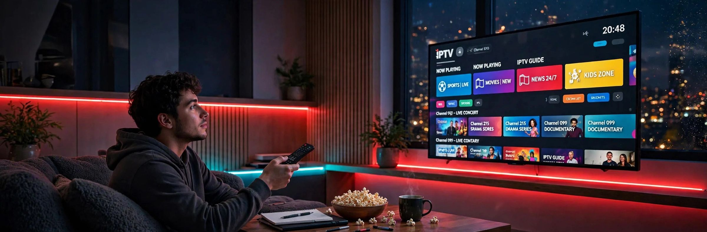
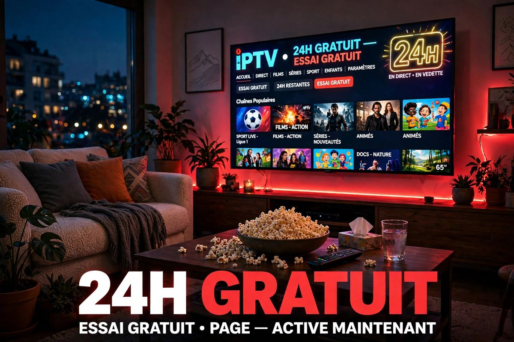

Blog IPTV : tout savoir sur l’IPTV en France
Bienvenue sur le blog Sunday IPTV, le point de départ pour regarder la télé par internet. Guides d’installation, comparatifs d’applications et solutions aux problèmes courants : tout pour profiter pleinement de votre abonnement.
Tous les articles

Essai IPTV gratuit sans risque
Comment tester l’IPTV pendant 24 heures et ce qu’il faut vérifier avant de choisir.

Qu’est-ce que l’IPTV ? Explication complète (2026)
Qu’est-ce que l’IPTV ? Fonctionnement de la télé par internet, matériel nécessaire, Xtream Codes et M3U, appareils compatibles et différences avec le satellite.

Les meilleures applications IPTV en 2026
Les meilleures applications IPTV en 2026 : TiviMate, IPTV Smarters Pro et les lecteurs pour Smart TV et Apple, comparés selon votre appareil et votre usage.

Box Android IPTV : bien la choisir et la préparer
Choisir une box Android IPTV : box certifiée ou générique, caractéristiques à vérifier, préparation avant l’installation et réglages pour garder une box rapide.

Guide TiviMate : installation et configuration
Guide TiviMate complet : installation sur Android TV et Fire TV, ajout de la playlist, guide des programmes (EPG), favoris, replay et fonctions Premium.

IPTV Smarters Pro : installer et configurer
IPTV Smarters Pro : installation sur Android, Fire TV, iPhone et Windows, connexion Xtream Codes, réglages recommandés et solutions aux erreurs fréquentes.

Fire TV Stick et IPTV : astuces pour une lecture fluide
Fire TV Stick lent ou qui coupe ? Réseau, mémoire, réglages cachés et bonnes habitudes pour rendre votre Fire TV Stick rapide et stable pour l’IPTV.

Panne IPTV : résoudre les coupures et le buffering
Panne IPTV, buffering ou chaîne qui coupe ? Diagnostic en 5 minutes, causes fréquentes, réglages réseau et appareil pour retrouver une lecture fluide.

Quel boîtier IPTV choisir en 2026 ?
Quel boîtier IPTV choisir en 2026 ? Fire TV Stick, box Android TV, Apple TV 4K ou boîtier MAG : comparatif, critères qui comptent et erreurs à éviter.